Hedrick
Pipp
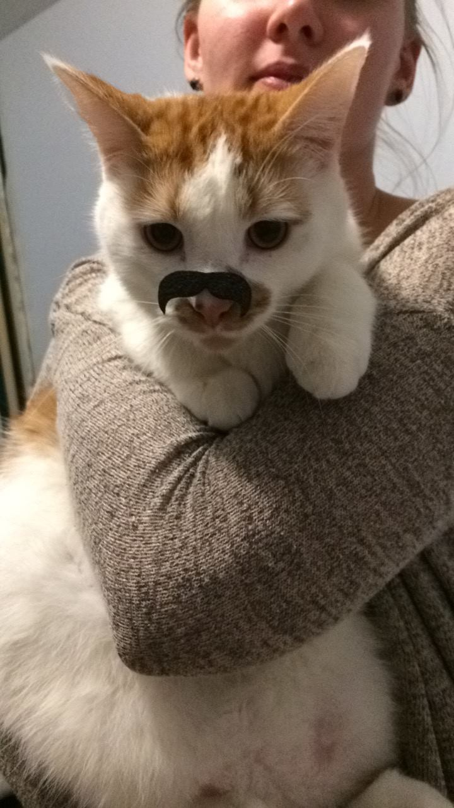
Owner:
Emmalena
About:
Pipp is socially awkward and prone to freaking out and
running so fast he turns sideways. However, also very friendly and
soft and enjoys cuddling. He is a curious critter that expresses
interest by extending his neck longer than a normal cat should.
Finn
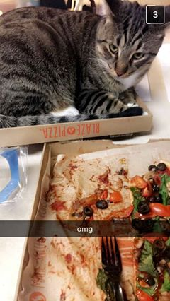
Owner:
Emmalena
About:
Finn actually IS a doge; enjoys being around wherever people
are 24/7, climbing into boxes of all sizes, trying to be an outdoor
cat then getting immediately scared, and very friendly and accepting
of all/any physical contact.
FUN FACT
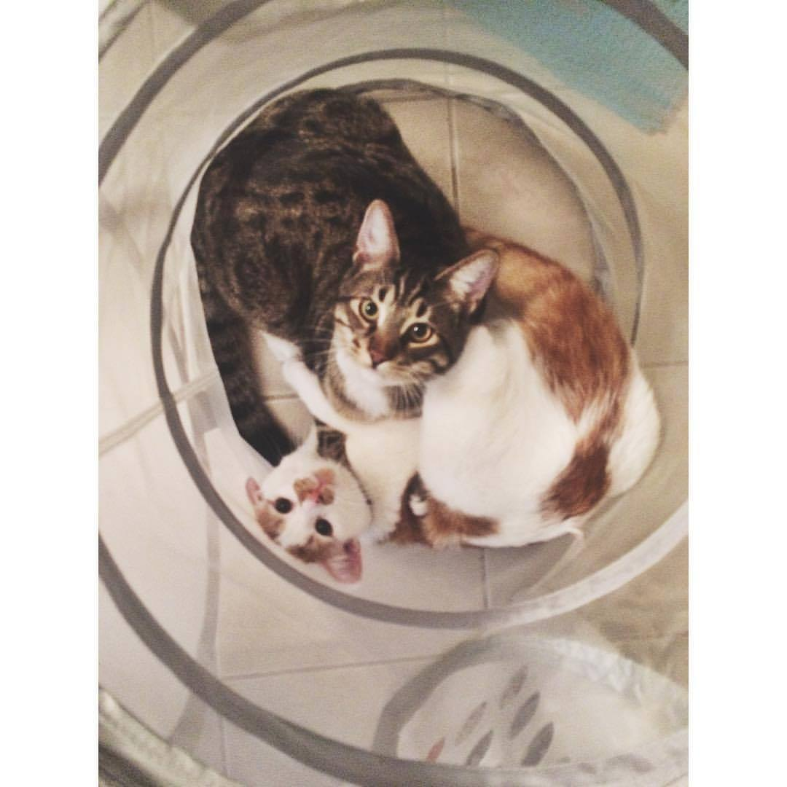
Finn and Pipp are biological brothers (I got them phresh from mama
cat, I am certain of the relation regardless of appearances) just
over 1 year old. They are both the size of small dogs. They are
really really quite large. They both love trash.
Howland
Sonar
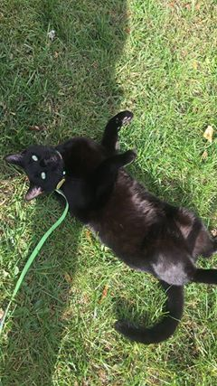
Owner:
Sonar has no owner. He is the physical manifestation of freedom. (Ian and Rachel)
About:
Sonar is beauty incarnate.
He is a timeless phantom drifting through all
eras bringing joy and dead animals to those he deems worthy of
experiencing his Majesty.
Miss Lady Whinfry
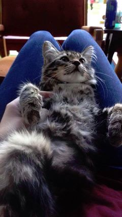
Owner:
Emily Small
About:
She is probably the cutest nugget in the whole wide world.
She enjoys watching tv, walks along MAC on a leash, and the love
from every person who walks in the door; Long story short, if you
ever see a cat in a tree, it's Whinfry.
Lucille, aka Lucy
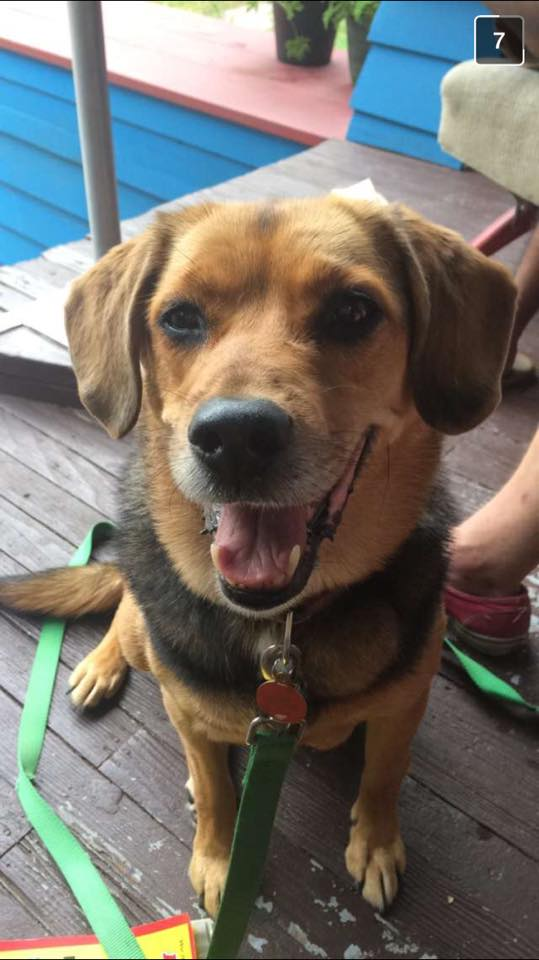
Owner:
She is the owner of Vincenzo Guglielmetti
About:
Enjoys walks, treats, and being told she's a good girl.
Has a strict, 9pm bed time.
Leftie
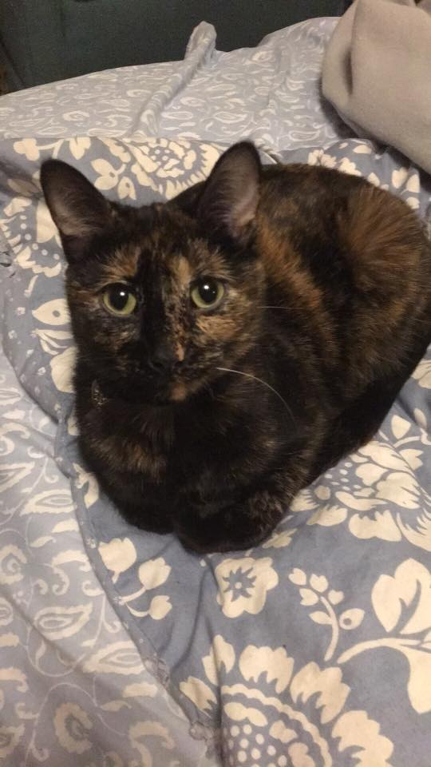
Owner:
Anna Gustafson
About:
Pretty disabled, squaks frequently, shits in tub occasionally,
purs excessively, sleeps under covers with me, has fleas 85% of the year.
Awake for approximately 2 hours a day in which she goes outside and
sprints around the perimeter of new comm while harassing neighborhood
squirrels she wants so badly to befriend
Orion
Phil Collins
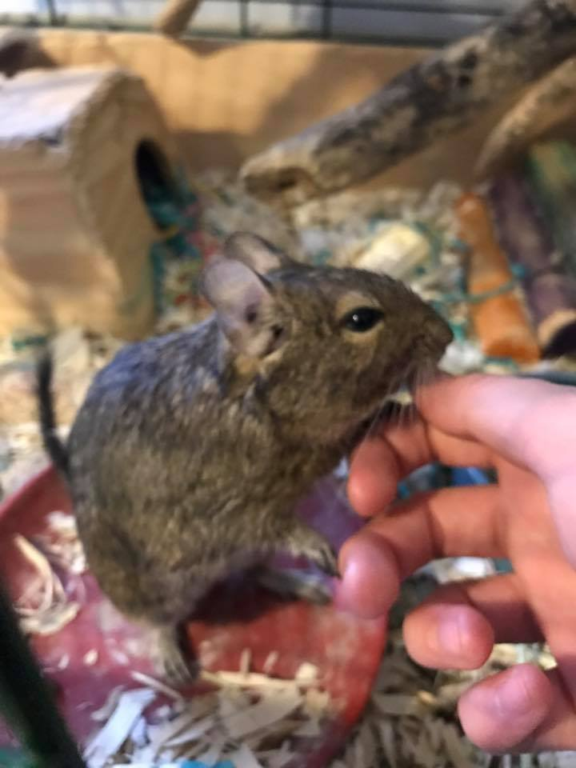
Owner:
Katie Patterson
About:
Phil Collins the degu likes to chill in pockets/down the
front of shirts and he eats hella pumpkin seeds. He's also always
down for chin and belly scratches, and gets so into it sometimes
that he'll fall over backwards. Whenever the cats stick their paws
into his cage he tries to groom them because he thinks they're also
degus and wants to be their friend.
Esmè
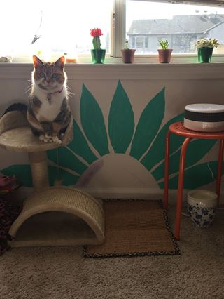
Owner:
Julia Felton
About:
Esmè is a senior citizen and reminds me of the grumpy old
lady at the senior home. She's convinced she's human. She enjoys
talking, being sassy, chasing away other cats, going for car rides,
sitting on top of Orion haus fridges, head scratches when it's
convenient for her and meowing at my door in the middle of the night
to let her out so she can adventure.
Tonsils
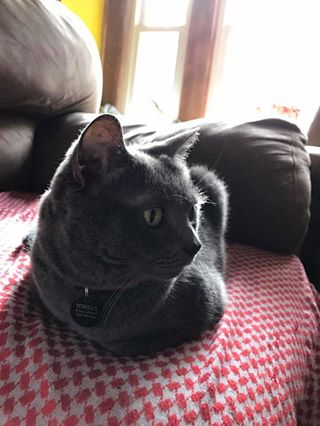
Owner:
Maddie Dutcher
About:
Chubby old man adopted in early september. loves head butts
and face rubs. loves laps. hates sudden noises. pals with tiny cat and Bruce.
Bruce Roosevelt Nephew
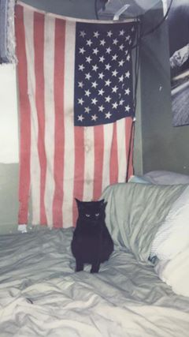
Owner:
Joshua and Leah
About:
A seasoned member of Orion, Bruce enjoys chewing on
cardboard and paper bags, playing in boxes, singing (meowing) in the
early morning, breakfast, lunch, and dinner time, freaking out over
reflections on the walls, playing fetch, and voicing his opinions
at meetings. He is also an avid bird and squirrel watcher when he's
not curled up in a shoe box in front of the fireplace. He loves his
friends and always makes sure the baby of the house has good hygiene,
someone to play with and a reminder of when it's time to nap.
Vesta
Katniss Scarecrow Crunchwrap Supreme I
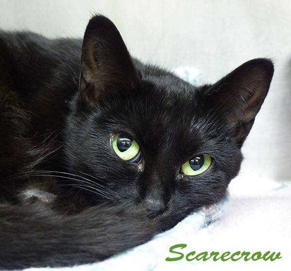
Owner:
An extension of Laura Nye's black soul
About:
Katniss has an identity crisis and therefore has many names
to match her many personalities. One moment she's a cat on the loose
living in the wild while I print out 750 flyers to find her. The next
she's a lazy couch potato that eats and sleeps all day. She was even
a teen mom before finding her furever home. She's known as the liquid
cat because she fills in the space in your arms no matter how you hold her.
Minnie
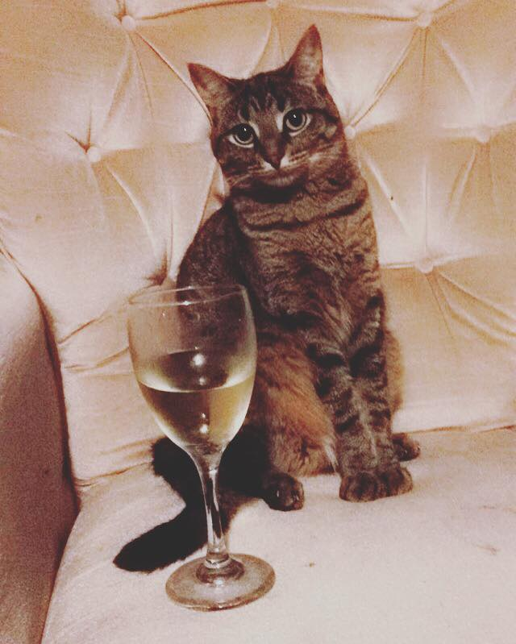
Owner:
Lizzie Sheeran
About:
Cute baby who likes to lay around in her pink chair and watch
over the living room. Also enjoys sleeping in other peoples beds and
eating scraps off the floor. Enjoys cuddles, but only on her terms.